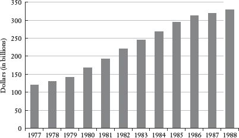

“He’s got a great personality!” and other
true but grossly misleading statements
To anyone who has ever contemplated dating, the phrase “he’s got a great personality” usually sets off alarm bells, not because the description is necessarily wrong, but for what it may not reveal, such as the fact that the guy has a prison record or that his divorce is “not entirely final.” We don’t doubt that this guy has a great personality; we are wary that a true statement, the great personality, is being used to mask or obscure other information in a way that is seriously misleading (assuming that most of us would prefer not to date ex-felons who are still married). The statement is not a lie per se, meaning that it wouldn’t get you convicted of perjury, but it still could be so inaccurate as to be untruthful.
And so it is with statistics. Although the field of statistics is rooted in mathematics, and mathematics is exact, the use of statistics to describe complex phenomena is not exact. That leaves plenty of room for shading the truth. Mark Twain famously remarked that there are three kinds of lies: lies, damned lies, and statistics.* As the last chapter explained, most phenomena that we care about can be described in multiple ways. Once there are multiple ways of describing the same thing (e.g., “he’s got a great personality” or “he was convicted of securities fraud”), the descriptive statistics that we choose to use (or not to use) will have a profound impact on the impression that we leave. Someone with nefarious motives can use perfectly good facts and figures to support entirely disputable or illegitimate conclusions.
We ought to begin with the crucial distinction between “precision” and “accuracy.” These words are not interchangeable. Precision reflects the exactitude with which we can express something. In a description of the length of your commute, “41.6 miles” is more precise than “about 40 miles,” which is more precise than “a long f——ing way.” If you ask me how far it is to the nearest gas station, and I tell you that it’s 1.265 miles to the east, that’s a precise answer. Here is the problem: That answer may be entirely inaccurate if the gas station happens to be in the other direction. On the other hand, if I tell you, “Drive ten minutes or so until you see a hot dog stand. The gas station will be a couple hundred yards after that on the right. If you pass the Hooters, you’ve gone too far,” my answer is less precise than “1.265 miles to the east” but significantly better because I am sending you in the direction of the gas station. Accuracy is a measure of whether a figure is broadly consistent with the truth—hence the danger of confusing precision with accuracy. If an answer is accurate, then more precision is usually better. But no amount of precision can make up for inaccuracy.
In fact, precision can mask inaccuracy by giving us a false sense of certainty, either inadvertently or quite deliberately. Joseph McCarthy, the Red-baiting senator from Wisconsin, reached the apogee of his reckless charges in 1950 when he alleged not only that the U.S. State Department was infiltrated with communists, but that he had a list of their names. During a speech in Wheeling, West Virginia, McCarthy waved in the air a piece of paper and declared, “I have here in my hand a list of 205—a list of names that were made known to the Secretary of State as being members of the Communist Party and who nevertheless are still working and shaping policy in the State Department.”1 It turns out that the paper had no names on it at all, but the specificity of the charge gave it credibility, despite the fact that it was a bald-faced lie.
I learned the important distinction between precision and accuracy in a less malicious context. For Christmas one year my wife bought me a golf range finder to calculate distances on the course from my golf ball to the hole. The device works with some kind of laser; I stand next to my ball in the fairway (or rough) and point the range finder at the flag on the green, at which point the device calculates the exact distance that I’m supposed to hit the ball. This is an improvement upon the standard yardage markers, which give distances only to the center of the green (and are therefore accurate but less precise). With my Christmas-gift range finder I was able to know that I was 147.2 yards from the hole. I expected the precision of this nifty technology to improve my golf game. Instead, it got appreciably worse.
There were two problems. First, I used the stupid device for three months before I realized that it was set to meters rather than to yards; every seemingly precise calculation (147.2) was wrong. Second, I would sometimes inadvertently aim the laser beam at the trees behind the green, rather than at the flag marking the hole, so that my “perfect” shot would go exactly the distance it was supposed to go—right over the green into the forest. The lesson for me, which applies to all statistical analysis, is that even the most precise measurements or calculations should be checked against common sense.
To take an example with more serious implications, many of the Wall Street risk management models prior to the 2008 financial crisis were quite precise. The concept of “value at risk” allowed firms to quantify with precision the amount of the firm’s capital that could be lost under different scenarios. The problem was that the supersophisticated models were the equivalent of setting my range finder to meters rather than to yards. The math was complex and arcane. The answers it produced were reassuringly precise. But the assumptions about what might happen to global markets that were embedded in the models were just plain wrong, making the conclusions wholly inaccurate in ways that destabilized not only Wall Street but the entire global economy.
Even the most precise and accurate descriptive statistics can suffer from a more fundamental problem: a lack of clarity over what exactly we are trying to define, describe, or explain. Statistical arguments have much in common with bad marriages; the disputants often talk past one another. Consider an important economic question: How healthy is American manufacturing? One often hears that American manufacturing jobs are being lost in huge numbers to China, India, and other low-wage countries. One also hears that high-tech manufacturing still thrives in the United States and that America remains one of the world’s top exporters of manufactured goods. Which is it? This would appear to be a case in which sound analysis of good data could reconcile these competing narratives. Is U.S. manufacturing profitable and globally competitive, or is it shrinking in the face of intense foreign competition?
Both. The British news magazine the Economist reconciled the two seemingly contradictory views of American manufacturing with the following graph.
“The Rustbelt Recovery,” March 10, 2011
The seeming contradiction lies in how one defines the “health” of U.S. manufacturing. In terms of output—the total value of goods produced and sold—the U.S. manufacturing sector grew steadily in the 2000s, took a big hit during the Great Recession, and has since bounced back robustly. This is consistent with data from the CIA’s World Factbook showing that the United States is the third-largest manufacturing exporter in the world, behind China and Germany. The United States remains a manufacturing powerhouse.
But the graph in the Economist has a second line, which is manufacturing employment. The number of manufacturing jobs in the United States has fallen steadily; roughly six million manufacturing jobs were lost in the last decade. Together, these two stories—rising manufacturing output and falling employment—tell the complete story. Manufacturing in the United States has grown steadily more productive, meaning that factories are producing more output with fewer workers. This is good from a global competitiveness standpoint, for it makes American products more competitive with manufactured goods from low-wage countries. (One way to compete with a firm that can pay workers $2 an hour is to create a manufacturing process so efficient that one worker earning $40 can do twenty times as much.) But there are a lot fewer manufacturing jobs, which is terrible news for the displaced workers who depended on those wages.
Since this is a book about statistics and not manufacturing, let’s go back to the main point, which is that the “health” of U.S. manufacturing—something seemingly easy to quantify—depends on how one chooses to define health: output or employment? In this case (and many others), the most complete story comes from including both figures, as the Economist wisely chose to do in its graph.
Even when we agree on a single measure of success, say, student test scores, there is plenty of statistical wiggle room. See if you can reconcile the following hypothetical statements, both of which could be true:
Politician A (the challenger): “Our schools are getting worse! Sixty percent of our schools had lower test scores this year than last year.”
Politician B (the incumbent): “Our schools are getting better! Eighty percent of our students had higher test scores this year than last year.”
Here’s a hint: The schools do not all necessarily have the same number of students. If you take another look at the seemingly contradictory statements, what you’ll see is that one politician is using schools as his unit of analysis (“Sixty percent of our schools . . .”), and the other is using students as the unit of analysis (“Eighty percent of our students . . .”). The unit of analysis is the entity being compared or described by the statistics—school performance by one of them and student performance by the other. It’s entirely possible for most of the students to be improving and most of the schools to be getting worse—if the students showing improvement happen to be in very big schools. To make this example more intuitive, let’s do the same exercise by using American states:
Politician A (a populist): “Our economy is in the crapper! Thirty states had falling incomes last year.”
Politician B (more of an elitist): “Our economy is showing appreciable gains: Seventy percent of Americans had rising incomes last year.”
What I would infer from those statements is that the biggest states have the healthiest economies: New York, California, Texas, Illinois, and so on. The thirty states with falling average incomes are likely to be much smaller: Vermont, North Dakota, Rhode Island, and so on. Given the disparity in the size of the states, it’s entirely possible that the majority of states are doing worse while the majority of Americans are doing better. The key lesson is to pay attention to the unit of analysis. Who or what is being described, and is that different from the “who” or “what” being described by someone else?
Although the examples above are hypothetical, here is a crucial statistical question that is not: Is globalization making income inequality around the planet better or worse? By one interpretation, globalization has merely exacerbated existing income inequalities; richer countries in 1980 (as measured by GDP per capita) tended to grow faster between 1980 and 2000 than poorer countries.2 The rich countries just got richer, suggesting that trade, outsourcing, foreign investment, and the other components of “globalization” are merely tools for the developed world to extend its economic hegemony. Down with globalization! Down with globalization!
But hold on a moment. The same data can (and should) be interpreted entirely differently if one changes the unit of analysis. We don’t care about poor countries; we care about poor people. And a high proportion of the world’s poor people happen to live in China and India. Both countries are huge (with a population over a billion); each was relatively poor in 1980. Not only have China and India grown rapidly over the past several decades, but they have done so in large part because of their increased economic integration with the rest of the world. They are “rapid globalizers,” as the Economist has described them. Given that our goal is to ameliorate human misery, it makes no sense to give China (population 1.3 billion) the same weight as Mauritius (population 1.3 million) when examining the effects of globalization on the poor.
The unit of analysis should be people, not countries. What really happened between 1980 and 2000 is a lot like my fake school example above. The bulk of the world’s poor happened to live in two giant countries that grew extremely fast as they became more integrated into the global economy. The proper analysis yields an entirely different conclusion about the benefits of globalization for the world’s poor. As the Economist points out, “If you consider people, not countries, global inequality is falling rapidly.”
The telecommunications companies AT&T and Verizon have recently engaged in an advertising battle that exploits this kind of ambiguity about what is being described. Both companies provide cellular phone service. One of the primary concerns of most cell phone users is the quality of the service in places where they are likely to make or receive phone calls. Thus, a logical point of comparison between the two firms is the size and quality of their networks. While consumers just want decent cell phone service in lots of places, both AT&T and Verizon have come up with different metrics for measuring the somewhat amorphous demand for “decent cell phone service in lots of places.” Verizon launched an aggressive advertising campaign touting the geographic coverage of its network; you may remember the maps of the United States that showed the large percentage of the country covered by the Verizon network compared with the relatively paltry geographic coverage of the AT&T network. The unit of analysis chosen by Verizon is geographic area covered—because the company has more of it.
AT&T countered by launching a campaign that changed the unit of analysis. Its billboards advertised that “AT&T covers 97 percent of Americans.” Note the use of the word “Americans” rather than “America.” AT&T focused on the fact that most people don’t live in rural Montana or the Arizona desert. Since the population is not evenly distributed across the physical geography of the United States, the key to good cell service (the campaign argued implicitly) is having a network in place where callers actually live and work, not necessarily where they go camping. As someone who spends a fair bit of time in rural New Hampshire, however, my sympathies are with Verizon on this one.
Our old friends the mean and the median can also be used for nefarious ends. As you should recall from the last chapter, both the median and the mean are measures of the “middle” of a distribution, or its “central tendency.” The mean is a simple average: the sum of the observations divided by the number of observations. (The mean of 3, 4, 5, 6, and 102 is 24.) The median is the midpoint of the distribution; half of the observations lie above the median and half lie below. (The median of 3, 4, 5, 6, and 102 is 5.) Now, the clever reader will see that there is a sizable difference between 24 and 5. If, for some reason, I would like to describe this group of numbers in a way that makes it look big, I will focus on the mean. If I want to make it look smaller, I will cite the median.
Now let’s look at how this plays out in real life. Consider the George W. Bush tax cuts, which were touted by the Bush administration as something good for most American families. While pushing the plan, the administration pointed out that 92 million Americans would receive an average tax reduction of over $1,000 ($1,083 to be precise). But was that summary of the tax cut accurate? According to the New York Times, “The data don’t lie, but some of them are mum.”
Would 92 million Americans be getting a tax cut? Yes.
Would most of those people be getting a tax cut of around $1,000? No. The median tax cut was less than $100.
A relatively small number of extremely wealthy individuals were eligible for very large tax cuts; these big numbers skew the mean, making the average tax cut look bigger than what most Americans would likely receive. The median is not sensitive to outliers, and, in this case, is probably a more accurate description of how the tax cuts affected the typical household.
Of course, the median can also do its share of dissembling because it is not sensitive to outliers. Suppose that you have a potentially fatal illness. The good news is that a new drug has been developed that might be effective. The drawback is that it’s extremely expensive and has many unpleasant side effects. “But does it work?” you ask. The doctor informs you that the new drug increases the median life expectancy among patients with your disease by two weeks. That is hardly encouraging news; the drug may not be worth the cost and unpleasantness. Your insurance company refuses to pay for the treatment; it has a pretty good case on the basis of the median life expectancy figures.
Yet the median may be a horribly misleading statistic in this case. Suppose that many patients do not respond to the new treatment but that some large number of patients, say 30 or 40 percent, are cured entirely. This success would not show up in the median (though the mean life expectancy of those taking the drug would look very impressive). In this case, the outliers—those who take the drug and live for a long time—would be highly relevant to your decision. And it is not merely a hypothetical case. Evolutionary biologist Stephen Jay Gould was diagnosed with a form of cancer that had a median survival time of eight months; he died of a different and unrelated kind of cancer twenty years later.3 Gould subsequently wrote a famous article called “The Median Isn’t the Message,” in which he argued that his scientific knowledge of statistics saved him from the erroneous conclusion that he would necessarily be dead in eight months. The definition of the median tells us that half the patients will live at least eight months—and possibly much, much longer than that. The mortality distribution is “right-skewed,” which is more than a technicality if you happen to have the disease.4
In this example, the defining characteristic of the median—that it does not weight observations on the basis of how far they lie from the midpoint, only on whether they lie above or below—turns out to be its weakness. In contrast, the mean is affected by dispersion. From the standpoint of accuracy, the median versus mean question revolves around whether the outliers in a distribution distort what is being described or are instead an important part of the message. (Once again, judgment trumps math.) Of course, nothing says that you must choose the median or the mean. Any comprehensive statistical analysis would likely present both. When just the median or the mean appears, it may be for the sake of brevity—or it may be because someone is seeking to “persuade” with statistics.
Those of a certain age may remember the following exchange (as I recollect it) between the characters played by Chevy Chase and Ted Knight in the movie Caddyshack. The two men meet in the locker room after both have just come off the golf course:
TED KNIGHT: What did you shoot?
CHEVY CHASE: Oh, I don’t keep score.
TED KNIGHT: Then how do you compare yourself to other golfers?
CHEVY CHASE: By height.
I’m not going to try to explain why this is funny. I will say that a great many statistical shenanigans arise from “apples and oranges” comparisons. Suppose you are trying to compare the price of a hotel room in London with the price of a hotel room in Paris. You send your six-year-old to the computer to do some Internet research, since she is much faster and better at it than you are. Your child reports back that hotel rooms in Paris are more expensive, around 180 a night; a comparable room in London is 150 a night.
You would likely explain to your child the difference between pounds and euros, and then send her back to the computer to find the exchange rate between the two currencies so that you could make a meaningful comparison. (This example is loosely rooted in truth; after I paid 100 rupees for a pot of tea in India, my daughter wanted to know why everything in India was so expensive.) Obviously the numbers on currency from different countries mean nothing until we convert them into comparable units. What is the exchange rate between the pound and the euro, or, in the case of India, between the dollar and the rupee?
This seems like a painfully obvious lesson—yet one that is routinely ignored, particularly by politicians and Hollywood studios. These folks clearly recognize the difference between euros and pounds; instead, they overlook a more subtle example of apples and oranges: inflation. A dollar today is not the same as a dollar sixty years ago; it buys much less. Because of inflation, something that cost $1 in 1950 would cost $9.37 in 2011. As a result, any monetary comparison between 1950 and 2011 without adjusting for changes in the value of the dollar would be less accurate than comparing figures in euros and pounds—since the euro and the pound are closer to each other in value than a 1950 dollar is to a 2011 dollar.
This is such an important phenomenon that economists have terms to denote whether figures have been adjusted for inflation or not. Nominal figures are not adjusted for inflation. A comparison of the nominal cost of a government program in 1970 to the nominal cost of the same program in 2011 merely compares the size of the checks that the Treasury wrote in those two years—without any recognition that a dollar in 1970 bought more stuff than a dollar in 2011. If we spent $10 million on a program in 1970 to provide war veterans with housing assistance and $40 million on the same program in 2011, the federal commitment to that program has actually gone down. Yes, spending has gone up in nominal terms, but that does not reflect the changing value of the dollars being spent. One 1970 dollar is equal to $5.83 in 2011; the government would need to spend $58.3 million on veterans’ housing benefits in 2011 to provide support comparable to the $10 million it was spending in 1970.
Real figures, on the other hand, are adjusted for inflation. The most commonly accepted methodology is to convert all of the figures into a single unit, such as 2011 dollars, to make an “apples and apples” comparison. Many websites, including that of the U.S. Bureau of Labor Statistics, have simple inflation calculators that will compare the value of a dollar at different points in time.* For a real (yes, a pun) example of how statistics can look different when adjusted for inflation, check out the following graph of the U.S. federal minimum wage, which plots both the nominal value of the minimum wage and its real purchasing power in 2010 dollars.

Source: http://oregonstate.edu/instruct/anth484/minwage.html.
The federal minimum wage—the number posted on the bulletin board in some remote corner of your office—is set by Congress. This wage, currently $7.25, is a nominal figure. Your boss does not have to ensure that $7.25 buys as much as it did two years ago; he just has to make sure that you get a minimum of $7.25 for every hour of work that you do. It’s all about the number on the check, not what that number can buy.
Yet inflation erodes the purchasing power of the minimum wage over time (and every other nominal wage, which is why unions typically negotiate “cost of living adjustments”). If prices rise faster than Congress raises the minimum wage, the real value of that minimum hourly payment will fall. Supporters of a minimum wage should care about the real value of that wage, since the whole point of the law is to guarantee low-wage workers some minimum level of consumption for an hour of work, not to give them a check with a big number on it that buys less than it used to. (If that were the case, then we could just pay low-wage workers in rupees.)
Hollywood studios may be the most egregiously oblivious to the distortions caused by inflation when comparing figures at different points in time—and deliberately so. What were the top five highest-grossing films (domestic) of all time as of 2011?5
1. Avatar (2009)
2. Titanic (1997)
3. The Dark Knight (2008)
4. Star Wars Episode IV (1977)
5. Shrek 2 (2004)
Now you may feel that list looks a little suspect. These were successful films—but Shrek 2? Was that really a greater commercial success than Gone with the Wind? The Godfather? Jaws? No, no, and no. Hollywood likes to make each blockbuster look bigger and more successful than the last. One way to do that would be to quote box office receipts in Indian rupees, which would inspire headlines such as the following: “Harry Potter Breaks Box Office Record with Weekend Receipts of 1.3 Trillion!” But even the most dim-witted moviegoers would be suspicious of figures that are large only because they are quoted in a currency with relatively little purchasing power. Instead, Hollywood studios (and the journalists who report on them) merely use nominal figures, which makes recent movies look successful largely because ticket prices are higher now than they were ten, twenty, or fifty years ago. (When Gone with the Wind came out in 1939, a ticket cost somewhere in the range of $.50.) The most accurate way to compare commercial success over time would be to adjust ticket receipts for inflation. Earning $100 million in 1939 is a lot more impressive than earning $500 million in 2011. So what are the top grossing films in the U.S. of all time, adjusted for inflation?6
1. Gone with the Wind (1939)
2. Star Wars Episode IV (1977)
3. The Sound of Music (1965)
4. E.T. (1982)
5. The Ten Commandments (1956)
In real terms, Avatar falls to number 14; Shrek 2 falls all the way to 31st.
Even comparing apples and apples leaves plenty of room for shenanigans. As discussed in the last chapter, one important role of statistics is to describe changes in quantities over time. Are taxes going up? How many cheeseburgers are we selling compared with last year? By how much have we reduced the arsenic in our drinking water? We often use percentages to express these changes because they give us a sense of scale and context. We understand what it means to reduce the amount of arsenic in the drinking water by 22 percent, whereas few of us would know whether reducing arsenic by one microgram (the absolute reduction) would be a significant change or not. Percentages don’t lie—but they can exaggerate. One way to make growth look explosive is to use percentage change to describe some change relative to a very low starting point. I live in Cook County, Illinois. I was shocked one day to learn that the portion of my taxes supporting the Suburban Cook County Tuberculosis Sanitarium District was slated to rise by 527 percent! However, I called off my massive antitax rally (which was really still in the planning phase) when I learned that this change would cost me less than a good turkey sandwich. The Tuberculosis Sanitarium District deals with roughly a hundred cases a year; it is not a large or expensive organization. The Chicago Sun-Times pointed out that for the typical homeowner, the tax bill would go from $1.15 to $6.7 Researchers will sometimes qualify a growth figure by pointing out that it is “from a low base,” meaning that any increase is going to look large by comparison.
Obviously the flip side is true. A small percentage of an enormous sum can be a big number. Suppose the secretary of defense reports that defense spending will grow only 4 percent this year. Great news! Not really, given that the Defense Department budget is nearly $700 billion. Four percent of $700 billion is $28 billion, which can buy a lot of turkey sandwiches. In fact, that seemingly paltry 4 percent increase in the defense budget is more than the entire NASA budget and about the same as the budgets of the Labor and Treasury Departments combined.
In a similar vein, your kindhearted boss might point out that as a matter of fairness, every employee will be getting the same raise this year, 10 percent. What a magnanimous gesture—except that if your boss makes $1 million and you make $50,000, his raise will be $100,000 and yours will be $5,000. The statement “everyone will get the same 10 percent raise this year” just sounds so much better than “my raise will be twenty times bigger than yours.” Both are true in this case.
Any comparison of a quantity changing over time must have a start point and an end point. One can sometimes manipulate those points in ways that affect the message. I once had a professor who liked to speak about his “Republican slides” and his “Democratic slides.” He was referring to data on defense spending, and what he meant was that he could organize the same data in different ways in order to please either Democratic or Republican audiences. For his Republican audiences, he would offer the following slide with data on increases in defense spending under Ronald Reagan. Clearly Reagan helped restore our commitment to defense and security, which in turn helped to win the Cold War. No one can look at these numbers and not appreciate the steely determination of Ronald Reagan to face down the Soviets.
Defense Spending in Billions, 1981–1988
For the Democrats, my former professor merely used the same (nominal) data, but a longer time frame. For this group, he pointed out that Jimmy Carter deserves credit for beginning the defense buildup. As the following “Democratic” slide shows, the defense spending increases from 1977 to 1980 show the same basic trend as the increases during the Reagan presidency. Thank goodness that Jimmy Carter—a graduate of Annapolis and a former naval officer—began the process of making America strong again!
Defense Spending in Billions, 1977–1988

Source: http://www.usgovernmentspending.com/spend.php?span=usgs302&year=1988&view=1&expand=30&expandC=&units=b&fy=fy12&local=s&state=US&pie=#usgs302.
While the main point of statistics is to present a meaningful picture of things we care about, in many cases we also hope to act on these numbers. NFL teams want a simple measure of quarterback quality so that they can find and draft talented players out of college. Firms measure the performance of their employees so that they can promote those who are valuable and fire those who are not. There is a common business aphorism: “You can’t manage what you can’t measure.” True. But you had better be darn sure that what you are measuring is really what you are trying to manage.
Consider school quality. This is a crucial thing to measure, since we would like to reward and emulate “good” schools while sanctioning or fixing “bad” schools. (And within each school, we have the similar challenge of measuring teacher quality, for the same basic reason.) The most common measure of quality for both schools and teachers is test scores. If students are achieving impressive scores on a well-conceived standardized test, then presumably the teacher and school are doing a fine job. Conversely, bad test scores are a clear signal that lots of people should be fired, sooner rather than later. These statistics can take us a long way toward fixing our public education system, right?
Wrong. Any evaluation of teachers or schools that is based solely on test scores will present a dangerously inaccurate picture. Students who walk through the front door of different schools have vastly different backgrounds and abilities. We know, for example, that the education and income of a student’s parents have a significant impact on achievement, regardless of what school he or she attends. The statistic that we’re missing in this case happens to be the only one that matters for our purposes: How much of a student’s performance, good or bad, can be attributed to what happens inside the school (or inside a particular classroom)?
Students who live in affluent, highly educated communities are going to test well from the moment their parents drop them off at school on the first day of kindergarten. The flip side is also true. There are schools with extremely disadvantaged populations in which teachers may be doing a remarkable job but the student test scores will still be low—albeit not nearly as low as they would have been if the teachers had not been doing a good job. What we need is some measure of “value-added” at the school level, or even at the classroom level. We don’t want to know the absolute level of student achievement; we want to know how much that student achievement has been affected by the educational factors we are trying to evaluate.
At first glance, this seems an easy task, as we can simply give students a pretest and a posttest. If we know student test scores when they enter a particular school or classroom, then we can measure their performance at the end and attribute the difference to whatever happened in that school or classroom.
Alas, wrong again. Students with different abilities or backgrounds may also learn at different rates. Some students will grasp the material faster than others for reasons that have nothing to do with the quality of the teaching. So if students in Affluent School A and Poor School B both start algebra at the same time and level, the explanation for the fact that students at Affluent School A test better in algebra a year later may be that the teachers are better, or it may be that the students were capable of learning faster—or both. Researchers are working to develop statistical techniques that measure instructional quality in ways that account appropriately for different student backgrounds and abilities. In the meantime, our attempts to identify the “best” schools can be ridiculously misleading.
Every fall, several Chicago newspapers and magazines publish a ranking of the “best” high schools in the region, usually on the basis of state test score data. Here is the part that is laugh-out-loud funny from a statistical standpoint: Several of the high schools consistently at the top of the rankings are selective enrollment schools, meaning that students must apply to get in, and only a small proportion of those students are accepted. One of the most important admissions criteria is standardized test scores. So let’s summarize: (1) these schools are being recognized as “excellent” for having students with high test scores; (2) to get into such a school, one must have high test scores. This is the logical equivalent of giving an award to the basketball team for doing such an excellent job of producing tall students.
Even if you have a solid indicator of what you are trying to measure and manage, the challenges are not over. The good news is that “managing by statistics” can change the underlying behavior of the person or institution being managed for the better. If you can measure the proportion of defective products coming off an assembly line, and if those defects are a function of things happening at the plant, then some kind of bonus for workers that is tied to a reduction in defective products would presumably change behavior in the right kinds of ways. Each of us responds to incentives (even if it is just praise or a better parking spot). Statistics measure the outcomes that matter; incentives give us a reason to improve those outcomes.
Or, in some cases, just to make the statistics look better. That’s the bad news.
If school administrators are evaluated—and perhaps even compensated—on the basis of the high school graduation rate for students in a particular school district, they will focus their efforts on boosting the number of students who graduate. Of course, they may also devote some effort to improving the graduation rate, which is not necessarily the same thing. For example, students who leave school before graduation can be classified as “moving away” rather than dropping out. This is not merely a hypothetical example; it is a charge that was leveled against former secretary of education Rod Paige during his tenure as the Houston school superintendent. Paige was hired by President George W. Bush to be U.S. secretary of education because of his remarkable success in Houston in reducing the dropout rate and boosting test scores.
If you’re keeping track of the little business aphorisms I keep tossing your way, here is another one: “It’s never a good day when 60 Minutes shows up at your door.” Dan Rather and the 60 Minutes II crew made a trip to Houston and found that the manipulation of statistics was far more impressive than the educational improvement.8 High schools routinely classified students who quit high school as transferring to another school, returning to their native country, or leaving to pursue a General Equivalency Diploma (GED)—none of which count as dropping out in the official statistics. Houston reported a citywide dropout rate of 1.5 percent in the year that was examined; 60 Minutes calculated that the true dropout rate was between 25 and 50 percent.
The statistical chicanery with test scores was every bit as impressive. One way to improve test scores (in Houston or anywhere else) is to improve the quality of education so that students learn more and test better. This is a good thing. Another (less virtuous) way to improve test scores is to prevent the worst students from taking the test. If the scores of the lowest-performing students are eliminated, the average test score for the school or district will go up, even if all the rest of the students show no improvement at all. In Texas, the statewide achievement test is given in tenth grade. There was evidence that Houston schools were trying to keep the weakest students from reaching tenth grade. In one particularly egregious example, a student spent three years in ninth grade and then was promoted straight to eleventh grade—a deviously clever way of keeping a weak student from taking a tenth-grade benchmark exam without forcing him to drop out (which would have showed up on a different statistic).
It’s not clear that Rod Paige was complicit in this statistical trickery during his tenure as Houston superintendent; however, he did implement a rigorous accountability program that gave cash bonuses to principals who met their dropout and test score goals and that fired or demoted principals who failed to meet their targets. Principals definitely responded to the incentives; that’s the larger lesson. But you had better be darn certain that the folks being evaluated can’t make themselves look better (statistically) in ways that are not consistent with the goal at hand.
The state of New York learned this the hard way. The state introduced “scorecards” that evaluate the mortality rates for the patients of cardiologists performing coronary angioplasty, a common treatment for heart disease.9 This seems like a perfectly reasonable and helpful use of descriptive statistics. The proportion of a cardiologist’s patients who die in surgery is an important thing to know, and it makes sense for the government to collect and promulgate such data since individual consumers would not otherwise have access to it. So is this a good policy? Yes, other than the fact that it probably ended up killing people.
Cardiologists obviously care about their “scorecard.” However, the easiest way for a surgeon to improve his mortality rate is not by killing fewer people; presumably most doctors are already trying very hard to keep their patients alive. The easiest way for a doctor to improve his mortality rate is by refusing to operate on the sickest patients. According to a survey conducted by the School of Medicine and Dentistry at the University of Rochester, the scorecard, which ostensibly serves patients, can also work to their detriment: 83 percent of the cardiologists surveyed said that, because of the public mortality statistics, some patients who might benefit from angioplasty might not receive the procedure; 79 percent of the doctors said that some of their personal medical decisions had been influenced by the knowledge that mortality data are collected and made public. The sad paradox of this seemingly helpful descriptive statistic is that cardiologists responded rationally by withholding care from the patients who needed it most.
A statistical index has all the potential pitfalls of any descriptive statistic—plus the distortions introduced by combining multiple indicators into a single number. By definition, any index is going to be sensitive to how it is constructed; it will be affected both by what measures go into the index and by how each of those measures is weighted. For example, why does the NFL passer rating not include any measure of third down completions? And for the Human Development Index, how should a country’s literacy rate be weighted in the index relative to per capita income? In the end, the important question is whether the simplicity and ease of use introduced by collapsing many indicators into a single number outweighs the inherent inaccuracy of the process. Sometimes that answer may be no, which brings us back (as promised) to the U.S. News & World Report (USNWR) college rankings.
The USNWR rankings use sixteen indicators to score and rank America’s colleges, universities, and professional schools. In 2010, for example, the ranking of national universities and liberal arts colleges used “student selectivity” as 15 percent of the index; student selectivity is in turn calculated on the basis of a school’s acceptance rate, the proportion of the entering students who were in the top 10 percent of their high school class, and the average SAT and ACT scores of entering students. The benefit of the USNWR rankings is that they provide lots of information about thousands of schools in a simple and accessible way. Even the critics concede that much of the information collected on America’s colleges and universities is valuable. Prospective students should know an institution’s graduation rate and the average class size.
Of course, providing meaningful information is an enterprise entirely different from that of collapsing all of that information into a single ranking that purports to be authoritative. To critics, the rankings are sloppily constructed, misleading, and detrimental to the long-term interests of students. “One concern is simply about its being a list that claims to rank institutions in numerical order, which is a level of precision that those data just don’t support,” says Michael McPherson, the former president of Macalester College in Minnesota.10 Why should alumni giving count for 5 percent of a school’s score? And if it’s important, why does it not count for ten percent?
According to U.S. News & World Report, “Each indicator is assigned a weight (expressed as a percentage) based on our judgments about which measures of quality matter most.”11 Judgment is one thing; arbitrariness is another. The most heavily weighted variable in the ranking of national universities and colleges is “academic reputation.” This reputation is determined on the basis of a “peer assessment survey” filled out by administrators at other colleges and universities and from a survey of high school guidance counselors. In his general critique of rankings, Malcolm Gladwell offers a scathing (though humorous) indictment of the peer assessment methodology. He cites a questionnaire sent out by a former chief justice of the Michigan Supreme Court to roughly one hundred lawyers asking them to rank ten law schools in order of quality. Penn State’s was one of the law schools on the list; the lawyers ranked it near the middle. At the time, Penn State did not have a law school.12
For all the data collected by USNWR, it’s not obvious that the rankings measure what prospective students ought to care about: How much learning is going on at any given institution? Football fans may quibble about the composition of the passer index, but no one can deny that its component parts—completions, yardage, touchdowns, and interceptions—are an important part of a quarterback’s overall performance. That is not necessarily the case with the USNWR criteria, most of which focus on inputs (e.g., what kind of students are admitted, how much faculty are paid, the percentage of faculty who are full-time) rather than educational outputs. Two notable exceptions are the freshman retention rate and the graduation rate, but even those indicators do not measure learning. As Michael McPherson points out, “We don’t really learn anything from U.S. News about whether the education they got during those four years actually improved their talents or enriched their knowledge.”
All of this would still be a harmless exercise, but for the fact that it appears to encourage behavior that is not necessarily good for students or higher education. For example, one statistic used to calculate the rankings is financial resources per student; the problem is that there is no corresponding measure of how well that money is being spent. An institution that spends less money to better effect (and therefore can charge lower tuition) is punished in the ranking process. Colleges and universities also have an incentive to encourage large numbers of students to apply, including those with no realistic hope of getting in, because it makes the school appear more selective. This is a waste of resources for the schools soliciting bogus applications and for students who end up applying with no meaningful chance of being accepted.
Since we are about to move on to a chapter on probability, I will bet that the U.S. News & World Report rankings are not going away anytime soon. As Leon Botstein, president of Bard College, has pointed out, “People love easy answers. What is the best place? Number 1.”13
The overall lesson of this chapter is that statistical malfeasance has very little to do with bad math. If anything, impressive calculations can obscure nefarious motives. The fact that you’ve calculated the mean correctly will not alter the fact that the median is a more accurate indicator. Judgment and integrity turn out to be surprisingly important. A detailed knowledge of statistics does not deter wrongdoing any more than a detailed knowledge of the law averts criminal behavior. With both statistics and crime, the bad guys often know exactly what they’re doing!
* Twain attributed this phrase to British prime minister Benjamin Disraeli, but there is no record of Disraeli’s ever saying or writing it.
* Available at http://www.bls.gov/data/inflation_calculator.htm.